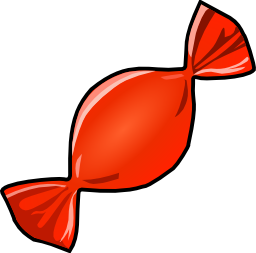
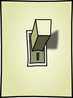

|  |
A Web-based game for learning about logic circuits (based loosely on the 1982 Apple ][ classic Rocky’s Boots). |
|  |
Build and test simple logic circuits in your browser. |
These apps are released under the GPLv3 license. You can browse the original code on which it is based at http://code.google.com/p/electras/.
The apps were developed in Summer 2012 at Hendrix College. Electra’s Candy was led by Professor Carl Burch with graphic design by Megan Childress; team members included Jeffrey Biles, Concorde Habineza, Jeannette Inema, Justin John, Thierry Kimenyi, Brandon McNew, Sung Oh, and Safari Sibomana. Electra’s Workshop was written by Professor Carl Burch with graphic design by Megan Childress.